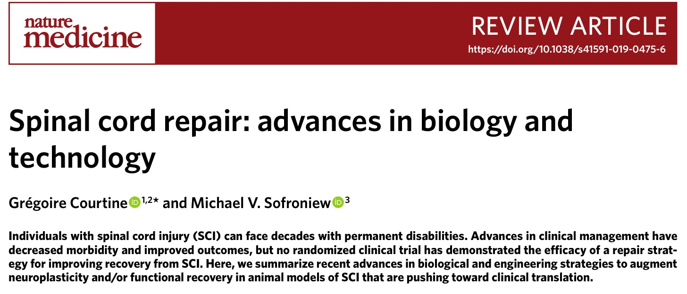
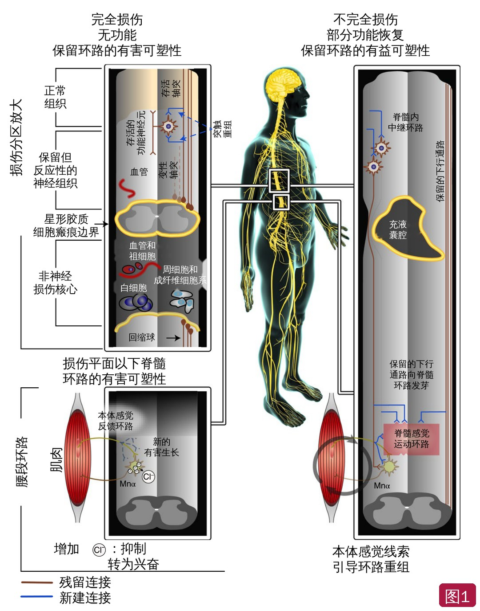
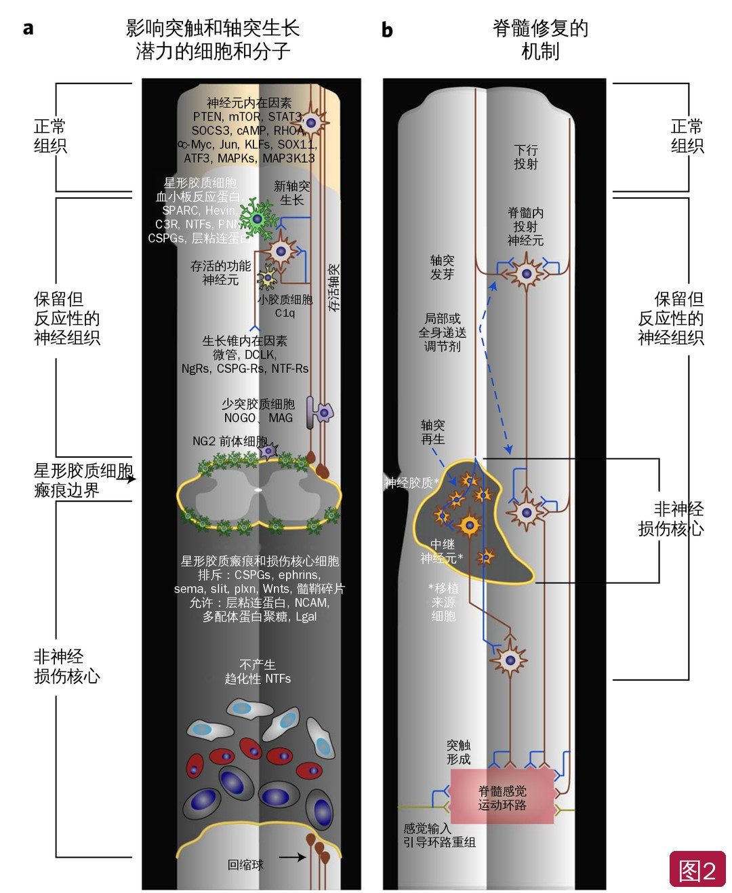
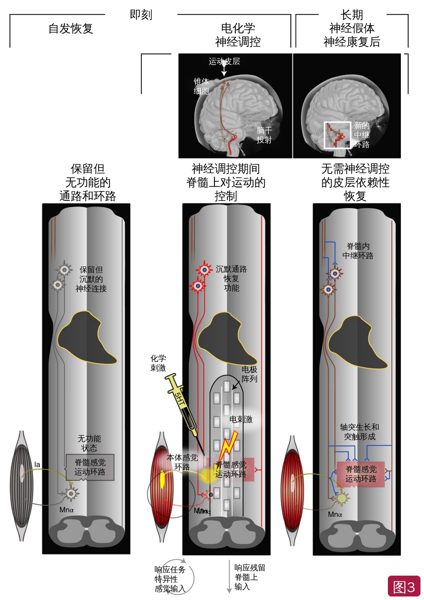
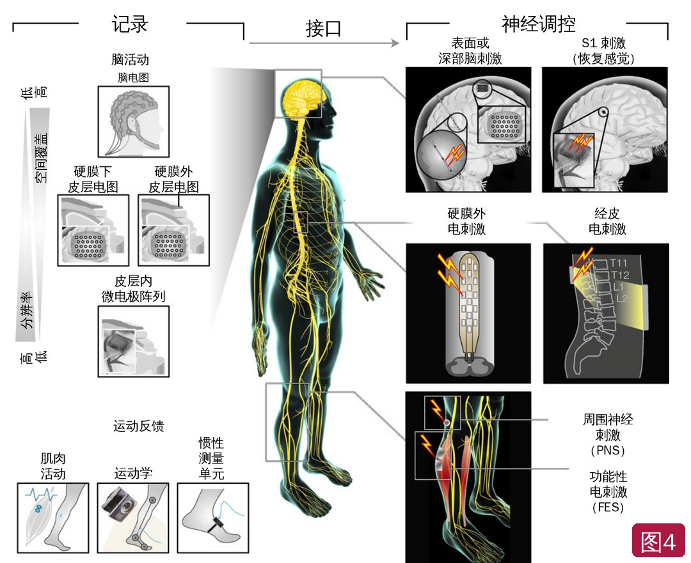

🔖原文首页（Nature Medicine 2019 年第 25 卷）
📚 文献卡片
▪ 英文原题：Spinal cord repair: advances in biology and technology（脊髓修复：生物学与技术进展）
▪ 作者：Grégoire Courtine · Michael V. Sofroniew
▪ 机构：瑞士洛桑联邦理工学院（EPFL）神经假体中心与脑-心智研究所；洛桑大学医院神经外科；美国加州大学洛杉矶分校神经生物学系
▪ 期刊：Nature Medicine
▪ 年卷期：2019;25(6):898-908
▪ DOI：10.1038/s41591-019-0475-6
▪ 文章类型：综述
美国脊髓损伤（SCI）年发病率约 54 例/百万人，每年约 1.7 万新发病例；世界卫生组织估计全球每年 25 万～50 万人发生 SCI。手术、支持治疗和康复的进步已降低并发症、改善结局，但至今没有任何修复策略在随机对照试验中被证明能改善功能恢复。约一半患者终身瘫痪，单人终生费用 100 万～500 万美元。
过去十年，研究不仅在轴突再生、炎症、瘢痕形成和细胞移植等传统方向推进，还揭示了自发环路重组和脊髓自主性的机制；工程学则催生了神经假体这一新领域。本文由脊髓电刺激领域的 Courtine 和胶质瘢痕领域的 Sofroniew 撰写，主要讨论运动功能恢复（作者也提醒，自主神经和性功能恢复是患者最看重的需求之一）。
| 方向 | 关键观点 |
|---|---|
| 恢复的前提 | 不必精确重建原有连接：脊髓内中继神经元形成的“绕行环路”就能传递皮层指令；损伤平面以下脊髓环路能利用感觉信息自主产生站立、行走 |
| 损伤分区 | 非神经损伤核心 + 星形胶质细胞瘢痕边界 + 保留但反应性的神经组织 |
| 不完全损伤 | 增强自发的环路重组和突触可塑性（单胺能药物、间歇低氧、抗 NOGO/CSPGs 等） |
| 完全损伤 | 轴突再生需三要素：激活神经元内在生长程序 + 支持性基质 + 趋化因子；或移植神经干细胞形成新的中继环路 |
| 星形胶质瘢痕 | 新证据：瘢痕边界不是轴突再生失败的主因，反而可能支持轴突生长 |
| 神经调控 | 硬膜外/经皮电刺激主要激活后根本体感觉纤维，提高脊髓环路兴奋性；时空刺激与运动时相同步 |
| 脑机接口 | 从“替代”转向“恢复”：脑-脊髓接口、皮层控制肌肉电刺激、体感皮层刺激恢复触觉 |
| 康复 | 神经调控 + 机器人减重训练可让部分患者在刺激关闭后也恢复自主运动；康复强度越大，可塑性越强 |
| 未来 | 生物和工程策略按时间窗组合；在挫伤模型和非人灵长类中验证 |
一句话概括：脊髓修复不再只是“让轴突长回去”——利用保留的环路、脊髓自主性和活动依赖的可塑性，把生物学修复和神经技术、康复按时间窗组合起来，才可能带来有意义的功能恢复。
• 过去认为恢复需要精确重建损伤前的连接，这一观点已被挑战。脑损伤后，未受损的传入会形成新突触，信息绕道传递；不完全 SCI 后同样发生自发的环路重组
• 例如脊髓半切（Brown-Séquard 综合征）会触发脊髓内、脑干和皮质脊髓投射环路的重组，人类可自发恢复相当程度的随意精细运动
• 投射神经元会形成绕行环路，即使所有直接下行连接都被切断，也能把皮层指令传到腰段执行中枢——提示脊髓内中继神经元（甚至移植来源）就可能足以介导有意义的恢复
• 脊髓自主性：传统称为中枢模式发生器；现在认为脊髓是“智能信息处理接口”，把任务相关的感觉信息和脊髓上输入转化为肌肉激活模式。即使完全失去脊髓上输入，脊髓环路仍能利用感觉信息产生站立、不同速度和方向的行走甚至上楼梯
• 因此，只需向损伤平面以下传递有限的信息，就可能恢复有意义的运动控制
SCI 损伤的严重程度和细胞组织各不相同。解剖上完全的损伤贯穿整个脊髓横截面，修复需要跨越大而“敌对”的非神经损伤核心，往往要侵入性治疗；解剖上不完全的损伤保留了足以通信的神经组织，常伴部分自发恢复，可以用（包括无创的）手段增强环路重组。
无论大小和严重程度，成熟损伤都有三个组织分区：
• 非神经损伤核心：由血管周围成纤维细胞来源的基质细胞、脑膜成纤维细胞和周细胞构成，常含囊腔（即纤维性/间充质瘢痕）
• 星形胶质细胞瘢痕边界：新增殖的星形胶质细胞包绕损伤核心，把炎症细胞“圈”在受损区内，保护邻近有功能的神经组织
• 保留但反应性的神经组织：含有正常神经组织的所有细胞，包括肥大的反应性星形胶质细胞和小胶质细胞，它们与正在重组的神经元和突触保持互动
“神经再生”的概念应扩展为多种轴突生长反应：从保留组织中的突触重塑，到穿越非神经损伤核心的轴突再生长。

🔖图1：SCI 生物学与自发恢复机制。左：完全损伤——无功能，损伤平面以下发生数十年的有害可塑性（如本体感觉传入异常发芽、氯离子稳态改变使抑制转为兴奋）；右：不完全损伤——保留的下行通路向脊髓内中继环路和感觉运动环路发芽，本体感觉线索引导环路重组。中间放大示三个损伤分区。部分机制来自动物模型（标注已改为中文）
• 不完全损伤后，脊髓内投射神经元形成“绕行环路”，皮质脊髓束和网状脊髓束神经元向这些中继神经元发芽；非人灵长类半切后，对侧白质中保留的皮质脊髓轴突越过中线发芽到损伤以下。人类也有类似重组的间接证据
• 动物模型已证实皮质脊髓束和网状脊髓束发芽与运动恢复之间存在因果关系；即使多处不完全损伤切断了所有直接下行输入，脊髓内中继也能恢复粗略的随意行走
• 感觉信息的双刃剑：本体感觉输入是引导下行环路重组、恢复行走的必要条件（缺乏本体感觉的小鼠无法恢复）；但下行突触丢失后，感觉传入会异常发芽占据突触位点，导致损伤以下神经功能退化，人类也有报道
• 增强可塑性的手段：5-羟色胺、去甲肾上腺素或多巴胺激动剂可增强训练中的活动依赖可塑性；间歇低氧激活中缝核 5-羟色胺能神经元并诱导 BDNF 合成，一项临床研究提示联合康复可能改善不完全 SCI 的步行，但需 III 期试验证实
• 突触可塑性的分子：补体 C1q、C3、C3R 调节小胶质细胞介导的突触修剪；星形胶质细胞分泌的血小板反应蛋白、磷脂酰肌醇蛋白聚糖、SPARC、Hevin 促进突触形成；CSPGs 和腱生蛋白形成神经元周围网，限制可塑性；NOGO 及其受体也限制突触可塑性
• 针对 CSPGs 或 NOGO 受体的策略主要作用于保留组织中的神经元周围网和突触可塑性，而不是让轴突穿越损伤；抗排斥性 Wnt 受体抗体可使皮质脊髓束近端明显发芽、改善恢复
• 成年后 CNS 神经元下调轴突生长能力。调控神经元内在信号（PTEN、mTOR、STAT3、SOCS3、KLFs、c-Myc、cAMP、MAP3K13 等）、炎症介质（oncomodulin、酵母聚糖、TLR2 和 Dectin-1 激动剂）或生长因子（IGF1、骨桥蛋白、CNTF）可激活再生能力
• 轴突生长还取决于趋化因子（BDNF、NT3）和支持性基质（层粘连蛋白、多配体蛋白聚糖、硫酸乙酰肝素蛋白聚糖）。髓鞘相关分子和 CSPGs 在体外影响生长，但目前没有令人信服的证据表明它们是 SCI 后轴突无法再生的主因
• 活化的巨噬细胞导致轴突回缩；损伤核心的周细胞和成纤维细胞不分泌促生长分子，因此不支持再生
• 颠覆性发现：星形胶质瘢痕不是元凶。小鼠基因学研究显示，阻止或清除瘢痕边界都没有让下行运动、上行感觉或 5-羟色胺轴突再生；反而在受刺激的感觉轴突穿越损伤时，清除边界会减少再生——瘢痕边界可能支持而非阻止轴突生长
• 三要素：小鼠和大鼠完全损伤模型中，感觉轴突和脊髓固有轴突要穿越非神经损伤核心，需同时满足 ①激活神经元内在生长程序，②提供支持性生长基质，③提供趋化因子——单独任何一项都不够；而且两类神经元需要的趋化因子不同
• 细胞移植：雪旺细胞或星形胶质细胞移植可帮助宿主轴突穿越损伤核心，自体雪旺细胞移植已进入临床试验；尾侧化神经祖细胞移植可在核心内存活、分化为神经元和胶质细胞，向上下双向投射，形成新的中继环路，连难以再生的皮质脊髓束也能长入。但在啮齿类和非人灵长类中功能恢复仍有限
• 生物材料：可注射、可吸收的多肽水凝胶作为生长因子缓释库，按时间顺序放置可引导轴突穿越完全损伤；带线性通道的支架可引导轴突直线生长；生物材料载体还能提高移植细胞的存活和分化

🔖图2：脊髓修复的生物学策略和机制。a 影响不同损伤分区中轴突和突触生长潜力的细胞与分子；b 可利用的修复机制——保留组织中的轴突发芽和突触形成、轴突再生穿越损伤核心、神经干细胞来源的移植物提供新的中继神经元或神经胶质、感觉输入引导环路重组（文字标注已改为中文，分子符号保留）
• 脊髓感觉运动环路常在损伤后完好，只是缺乏脊髓上的调制和兴奋输入。神经调控就是补上缺失的兴奋，重新激活这些环路
• 中脑运动区深部脑刺激可在部分损伤大鼠中改善行走，但依赖残留的网状脊髓神经元，人类中的意义未明
• 更严重的损伤：把单胺能药物和电刺激（经皮、硬膜外、硬膜下、脊髓内）直接作用于含运动环路的脊髓节段，已在动物和瘫痪患者中实现意想不到的下肢和手部控制，还可能改善心血管和呼吸功能
• 机制：背侧电场扩散到后根，大直径本体感觉纤维电阻低、最先被募集，进而提高脊髓环路兴奋性，使其响应任务相关的感觉信息和残留的脑信号。运动完全瘫痪者在刺激中重新能激活瘫痪肌肉
• 临床“完全”损伤常保留部分下行投射（尤其是网状脊髓通路），只是不足以引起可测的肌肉收缩
• 时空神经调控：用空间选择性电极刺激特定后根，并按运动神经元自然激活的时机给予短串刺激，形成闭环；比持续刺激产生更大、更稳健的腿部运动，使动物和人实现完全负重行走

🔖图3：实现即刻和长期运动恢复的工程策略。左：严重不完全损伤后，保留的通路和环路处于“沉默”状态；中：化学（5-羟色胺能药物）和电神经调控即刻让脊髓环路响应任务特异性感觉输入和残留的脊髓上输入，可在刺激下随意控制运动；右：结合神经康复后，脑干和脊髓中残留连接广泛重组，即使不用神经调控也能由皮层控制运动（标注已改为中文）
• 脑机接口（BCI）从神经信号中解码运动或认知意图，转为执行指令。过去用于让失语或瘫痪者快速打字、操控多关节假肢
• 新一代 BCI 从替代转向恢复：皮层信号直接驱动神经肌肉电刺激，让两名四肢瘫患者完成上肢功能动作；把触压信息编码成体感皮层刺激，让瘫痪者在机械手单个手指上感到压力；下肢运动皮层无线连接脊髓刺激，形成脑-脊髓接口，在大鼠和非人灵长类恢复行走
• 上肢更难：灵巧手控制更复杂，颈髓损伤伴永久灰质损害；但即使手功能小幅改善也能明显提高生活质量
• 转化障碍：功能获益与技术难度和费用相比仍有限；唯一获批的皮层内电极（Utah 阵列）信号质量会迅速衰减；硬膜外/硬膜下皮层电极更稳定但分辨率可能不足；还需要无线记录和无需反复校准的解码算法

🔖图4：连接运动意图与失神经支配部位的工程技术。左：记录技术需要在分辨率、空间覆盖和侵入性之间权衡（脑电图、硬膜下/硬膜外皮层电图、皮层内微电极阵列），以及运动反馈信号（肌电、运动学、惯性测量单元）；右：神经调控手段（脑刺激、S1 刺激恢复感觉、硬膜外和经皮脊髓电刺激、周围神经刺激、功能性电刺激）（标注已改为中文）
• 活动疗法是 SCI 康复的常规手段：反复激活感觉运动系统可增强保留环路和残留连接的活动依赖可塑性
• 运动皮层电刺激促进保留的皮质脊髓束发芽；经颅磁刺激（结果有争议）可增强残留通路传导、改善运动并减轻痉挛；损伤上下成对联合刺激可持久增强皮层和脊髓输出
• 动物研究显示，可塑性程度与训练量和强度相关；但严重损伤后脊髓兴奋性低下，对感觉信息反应差，限制了活动疗法的效果——神经调控恢复了脊髓处理感觉信息的能力，使高强度训练成为可能
• 跑台踏步训练（动物中不需要脊髓上参与）能诱导脊髓环路可塑性，但不能恢复与脊髓上中枢的功能连接；在鼓励脑参与的机器人减重系统中训练，才能恢复随意运动
• 永久下肢瘫痪的大鼠和人，在机器人支持 + 神经调控训练后，能按情境调整速度和步高、上楼梯；部分在关闭神经调控后仍能随意运动——依赖残留连接的广泛重组，皮层指令通过新的脑干通路和/或脊髓内中继传到腰段
• 自上而下 + 自下而上：脊髓上信号与本体感觉信息的相互作用是关键。例如截瘫者在脑信号驱动的外骨骼中训练，并把双腿的本体感觉信息通过上肢反馈，部分失神经皮节的感觉逐渐恢复
• 现实差距：患者仍更喜欢轮椅；下肢外骨骼耗能高、穿戴麻烦、操作复杂、速度慢。语音控制的植入设备可能让居家持续训练成为可能
• 生物和工程策略作用于不同机制，组合理应协同，但实际比想象复杂：活动疗法与增强可塑性的策略之间存在复杂交互，练习内容与给药时间窗决定了有益与有害可塑性的平衡；大量失败的组合尝试并未发表
• 作者批评：未经证实的细胞治疗、不成熟的工程技术和高强度训练的“可疑组合”在医疗旅游诊所中泛滥
• 过去的组合是“代数式”的简单叠加；应基于机制交互设计——例如生物干预增强对神经假体康复的反应，脑控制调控特定神经元，帮助新生连接整合进 CNS
• 动物模型：多数研究用部分切断模型（机制清楚、可自发恢复），但无法复制人类多数损伤的特点；严重挫伤或压伤模型更接近人类（永久瘫痪），且恢复机制不同。建议两类模型都测试，并在非人灵长类中进行小规模、结构良好的研究后再进入人体
• 文章性质：顶级期刊的叙述性综述，作者是神经调控（Courtine）和胶质瘢痕（Sofroniew）领域的代表人物，观点权威，但不是系统综述，引用以两位作者团队的工作为主
• 证据多来自动物：大部分机制和疗效来自啮齿类和少数非人灵长类；作者自己也强调人类 SCI 是否有相同机制尚不确定，人体研究多为个案或小样本
• “星形胶质瘢痕有益”仍有争议：这一结论主要来自 Sofroniew 团队的小鼠基因学研究，领域内仍有不同观点
• 时效性：发表于 2019 年。此后硬膜外电刺激、脑-脊髓接口等已有新的人体研究进展，读者应结合最新文献
• 对康复人员的启示：①活动依赖的可塑性是所有疗法的共同基础，康复强度和任务特异性很重要；②训练应鼓励脊髓上参与（主动、任务导向），而不只是被动踏步；③本体感觉输入在恢复中起核心作用
• 小瑕疵：“Retractation bulbs”应为 retraction；“it worth noting”漏 is；发表日期仍为占位符 xx xx xxxx
① 恢复不必精确重建：脊髓内中继“绕行环路”加上脊髓自主性，传递少量信息就可能恢复运动
② 三个损伤分区：非神经核心、星形胶质瘢痕边界、保留但反应性的神经组织，各有不同修复策略
③ 不完全损伤：增强自发环路重组和突触可塑性；本体感觉既引导有益重组，也可能导致有害发芽
④ 完全损伤：再生三要素（内在生长程序 + 支持基质 + 趋化因子），或移植神经祖细胞建立新中继；瘢痕边界并非元凶
⑤ 神经调控：电刺激激活后根本体感觉纤维、唤醒脊髓环路；时空刺激更有效
⑥ 脑机接口：从替代走向恢复，脑-脊髓接口重建大脑与下肢的通信
★ 康复是核心：神经调控 + 鼓励脑参与的高强度训练，带来刺激关闭后仍保留的恢复；未来需按时间窗组合生物与工程策略
欢迎关注悦美力公众号，获取更多物理治疗的专业知识！
📄参考文献：
Courtine G, Sofroniew MV. Spinal cord repair: advances in biology and technology. Nat Med. 2019;25(6):898-908. doi:10.1038/s41591-019-0475-6.
文中 4 张图片来自原文，英文标注已改为中文（分子和基因符号保留）；表格为编者整理，仅用于学术交流。原文版权归 Springer Nature 所有。